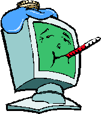

| Home | Services and Pricing | About the site | Contact Info | Hours |
The goal is to be your one starting point for all things computer related in the Portland Metro. Tips, advice, and help from experts in the fields of computer repair and all things computer related.
Why I started this:
My solution came from previous computer builds and work I've done for people in the past. I find it is easier for both parties if the computer is taken with the technician and worked on a little more leisurely. This is done by picking up the computer and charging a per job price. If you aren't in a rush, what is the need to pay a company 3 hours of work for the 20 minutes they actually did something other than wait for programs to load. I work on several computers and go to one after another. This also eliminates two common problems. First is making sure the client and technician have a few hours open for work to be done. Second, there is a HUGE database of error codes and other technicians that have advise on problems. It is difficult to get that data in a short amount of time. Even the BEST technicians haven't seen everything, but they'll have lots of equipment with them and charge very high rates!
Thus, here is my computer repair and technician training business!